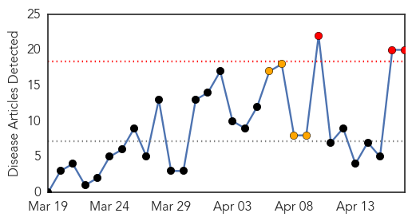
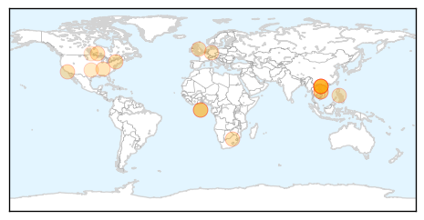
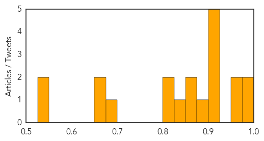
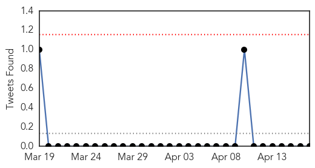

Measles
30-Day Web Trend
3 alerts, 4 warnings

30-Day Twitter Trend
0 alerts, 0 warnings

Article Locations
Article Confidences
Top Articles:
- 0.994
- Vietnam’s PM Calls for Urgent Measures as Measles Death Toll Climbs
- 0.990
- Health Ministry denies hiding measles epidemic
- 0.971
- Over 7,000 children catch measles in Vietnam; at least 111 die
- 0.970
- NYC Health Commissioner On Measles Outbreak: 'We Must Continue To Remain Vigilant'
- 0.924
- SGGP English Edition- Deaths from measles undocumented by Ministry of Health
- 0.916
- Vaccination: It’s just a jab to the left
- 0.908
- FAQ: How you can still get measles even after being vaccinated
- 0.905
- Experimental drug offers promise in fight against measles
- 0.903
- Ministry urges local departments to work harder against measles
- 0.882
- Pop a pill to cure measles
- 0.869
- Peninsula health officials on lookout for measles after recent outbreaks elsewhere in state -- Port Angeles Port Townsend Sequim Forks Jefferson County Clallam County Olympic Peninsula Daily NEWS
- 0.863
- We can all help stamp out measles
- 0.832
- Minn. mom advocates for vaccines after losing child
- 0.817
- New Anti-Viral Drug May Be the Breakthrough Needed Pertaining to Measles
- 0.816
- PM orders drastic measures against widespread measles
- 0.692
- Experimental new drug offers promise in fight against measles
- 0.673
- SGGP English Edition- PM asks medical sector to curb measles spreading
- 0.653
- State health officials warn against skipping vaccinations
- 0.548
- Pop a pill for measles? Maybe soon, as new drug passes tests in animal trials
- 0.529
- Measles information lacking
Top Tweets:
-
No tweets found for Apr 17, 2014
Cholera
30-Day Web Trend
0 alerts, 0 warnings

30-Day Twitter Trend
0 alerts, 0 warnings

Article Locations

Article Confidences

Top Articles:
-
No articles found for Apr 17, 2014
Top Tweets:
-
No tweets found for Apr 17, 2014